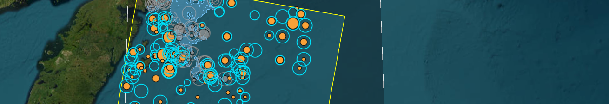
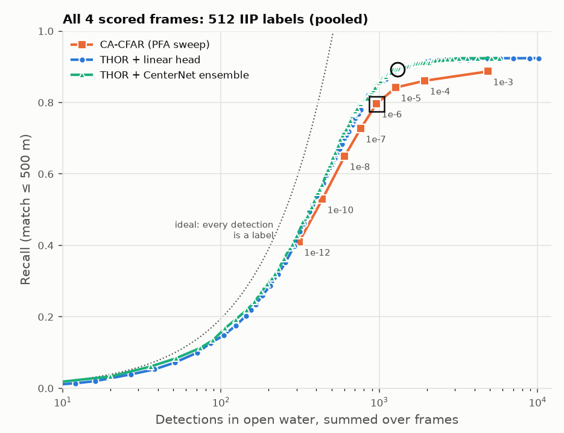

Project portfolio · Remote sensing + machine learning
Iceberg Alley SAR
Finding icebergs off Newfoundland in Sentinel‑1 radar with THOR, a SAR foundation model, benchmarked against a classical CA‑CFAR detector.

of analyst-labelled icebergs found by THOR on four held-out frames (435 of 512)
found by the CA-CFAR baseline with the same number of detections
recall on medium bergs (61–120 m, 425 labels), where most of the gain is
detections for THOR to reach the CFAR's 80% recall (≈790 vs 961)
Summary
I added the THOR foundation model (frozen encoder plus a small trained head) as a second iceberg detector next to my CA-CFAR baseline. On four held-out Sentinel‑1 frames from April 2019 (512 analyst-labelled bergs), THOR found 85% of the labelled bergs and the CFAR found 80%, with both detectors allowed the same number of detections. The gain is mostly in medium-sized bergs; for large bergs (>120 m) it was 11 of 14 against 10.
Setup
The baseline is a cell-averaging CFAR on HV intensity (Sentinel‑1 IW, HyP3 RTC at 10 m), with land and pack-ice masks and an HH co-pol check. Its rule against thin sea-ice strips runs only in scenes with pack ice.
The setup follows Forgaard et al., Efficient iceberg detection in Sentinel‑1 imagery using the THOR foundation model (IGARSS 2026). The article worked with VV/VH polarization; I used HH/HV, and the model accepted it well. I used the tiny model (FM4CS, Apache 2.0), which the article reported as performing well, with 8×8 patches.
Data and labels
Training used 17 Sentinel‑1 IW HH/HV frames from May–June 2019 and April–May 2020. Each frame has same-pass IIP satellite-analyst labels, so no drift correction was needed. That gave 702 chips of 512×512 px with 432 visible labelled bergs. The chips were sampled around bergs, open water, the swath edge and the pack-ice edge.
- Label cleaning. IIP positions are truncated to 0.1 arc-minute. Moving them to the cell centre halved the position error (median 135 m to 67 m). I then snapped each label to the nearest bright HH peak within 200 m.
- Ignored regions. Labels on masked pixels and CFAR detections with no label are excluded from the loss. They are not treated as water.
- Leakage. Bergs drift only 10–20 km a day, so the same berg appears on nearby dates. All of 25 March to 6 May 2019 was held out as the test window, and head selection used year folds (train 2019, validate 2020, and the reverse).
- Pack-ice set. The Feb–Mar 2019 frames are mostly close pack ice. They were never trained on and are kept as a separate stress set.
Tools
PyTorch · TerraTorch · Python · NumPy · SciPy · rasterio · GeoPandas · HyP3 · Vue 3 · CesiumJS

Results on the held-out test frames
The test used four April 2019 frames with same-pass analyst labels. THOR was not tuned on them. Without AIS, precision can't be measured, so I compared recall at a matched number of detections. The CFAR's count at PFA 1e‑6 was fixed, and THOR got the same number of top-scoring peaks. Both detectors used the same masks, labels and 500 m one-to-one matching.
- THOR is ahead on every frame, by 2 to 7 points. Pooled, it reaches the CFAR's recall with about 18% fewer detections. The CFAR flattens at 0.89 even at PFA 1e‑3 (about 4,900 detections); THOR reaches that with about 1,300.
- Large bergs (>120 m): THOR 11 of 14, CFAR 10. The CFAR's length rule against sea-ice strips used to throw them away (grown blobs of 340–470 m), leaving it 4 of 14 and 74% overall. It now runs only in scenes with pack ice; the four it still misses are on those frames.
- Medium bergs (61–120 m) carry most of the gain: 0.81 to 0.88 on 425 labels.
- Small bergs (15–60 m) are a tie at 0.71. They are near the ~20 m true resolution, and one THOR token is 80 m.
Limitations
The pooled gap (5 points) is about 2.5 times the binomial noise at n = 512. The pack-ice cutoff for the CFAR's strip rule was set after seeing one test frame (no labels used). The evidence is one month of one year, the frames share some bergs, and near range (<35° incidence) is untested.
- Pack ice. On its own, THOR fires on pack ice: 34–82% of its peaks on icy frames fall inside the CFAR's ice mask, and on the pack-ice stress set its F1 is only 0.2–0.35. It depends on the CFAR pipeline's HV ice mask.
- Precision is unknown for both detectors. At the matched count, the CFAR has 553 unlabelled detections and THOR has 526. Without AIS, ships and missed bergs can't be told apart.